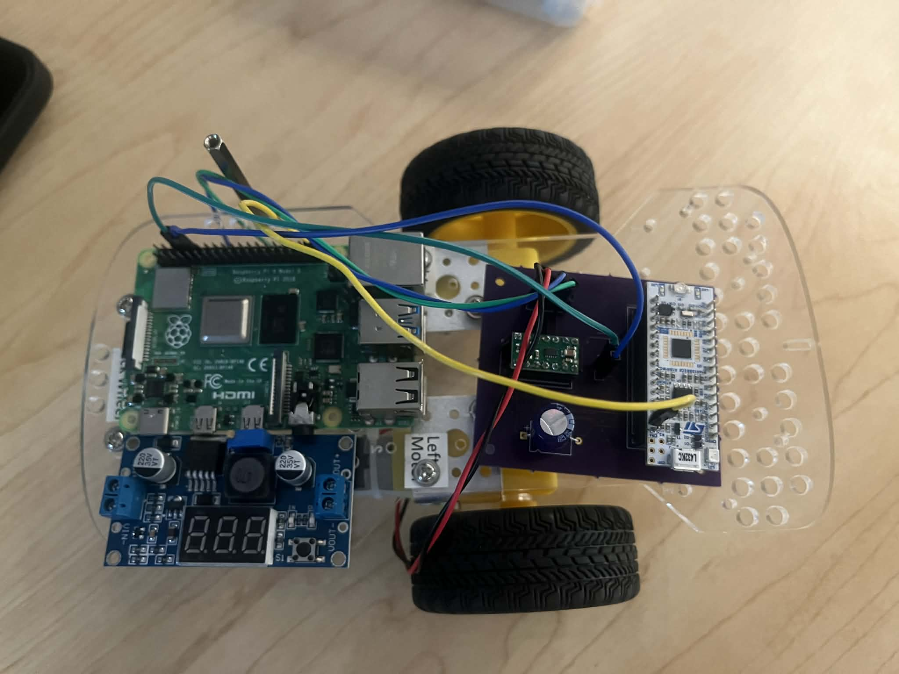
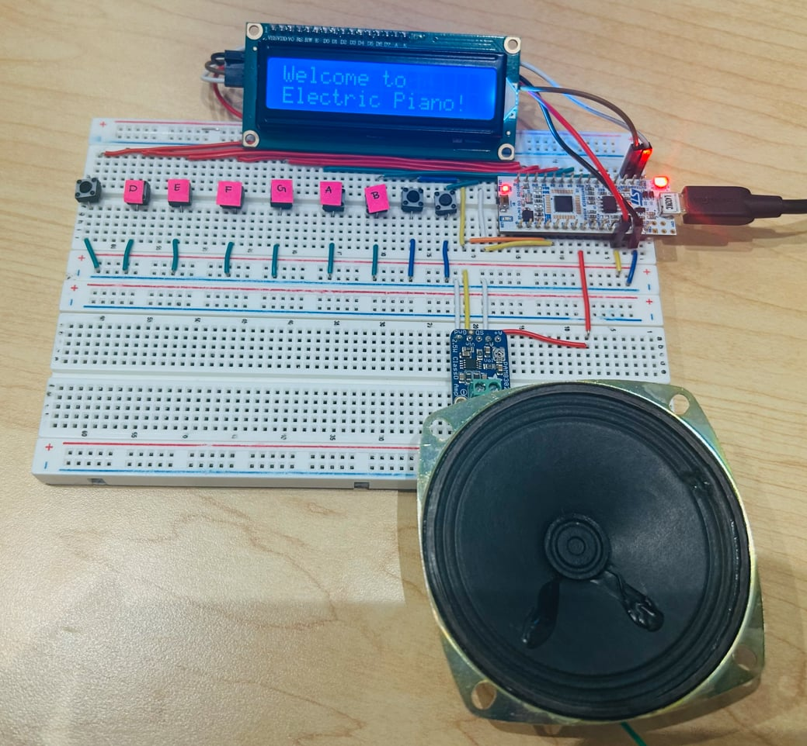

SystemVerilog Snake Game
Field: EE
Specific: Digital Logic
Duration: Nov. 2025 - Jan. 2025
Skills: SystemVerilog, Python, FPGA, breadboard prototyping, Git
SystemVerilog on a UPDuino to implement the Snake Arcade Game.

RC Car
Field: EE
Specific: Embedded Systems
Duration: Jun. 2025 - Present
Skills: Embedded C, Python, breadboard prototyping, STM32 (GPIO, UART, PWM), Git
A small car controlled via a website. Tech used: Python / STM32.

Electric Piano
Field: EE
Specific: Embedded Systems
Duration: Mar. 2025 - May. 2025
Skills: Embedded C, STM32 (PWM, I2C, interrupts, ADC, DAC, breadboard prototyping, git)
Miniature Breadboard piano equipped with two octave whole step notes and three built in songs for games facilitated by LCD.